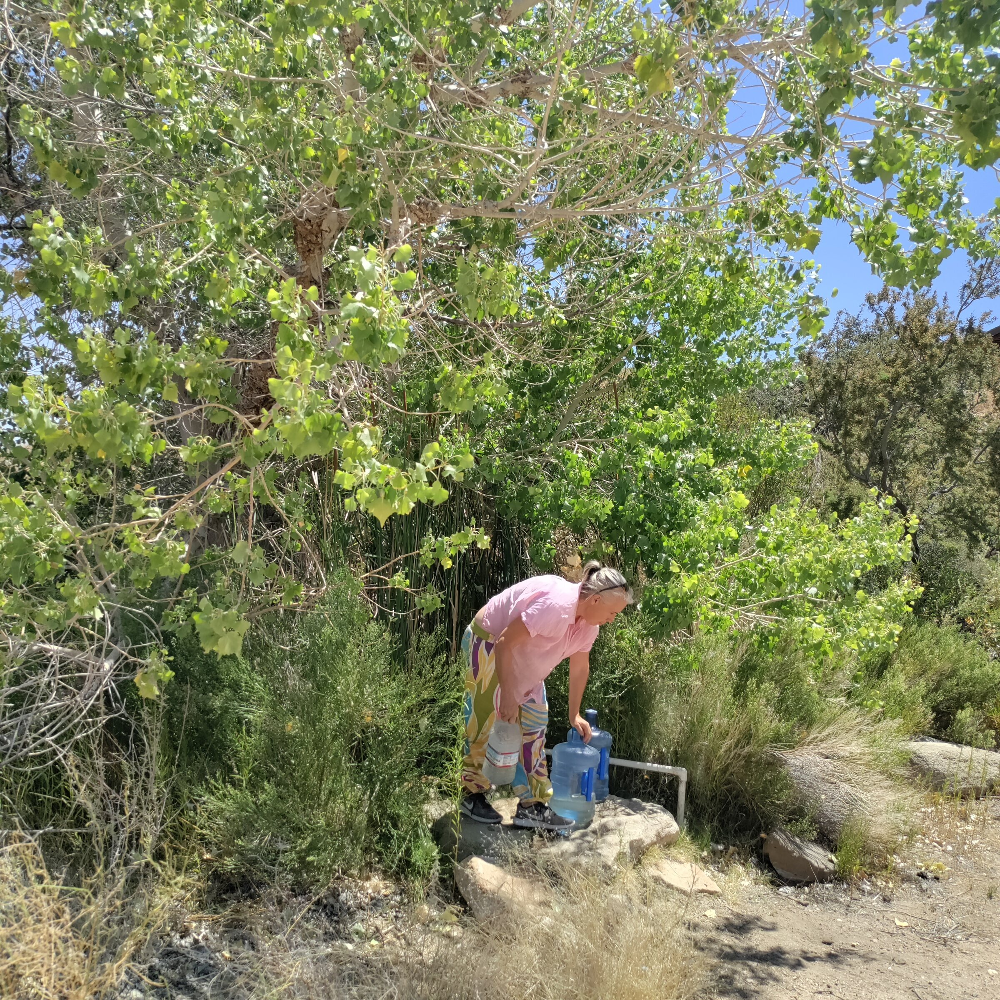
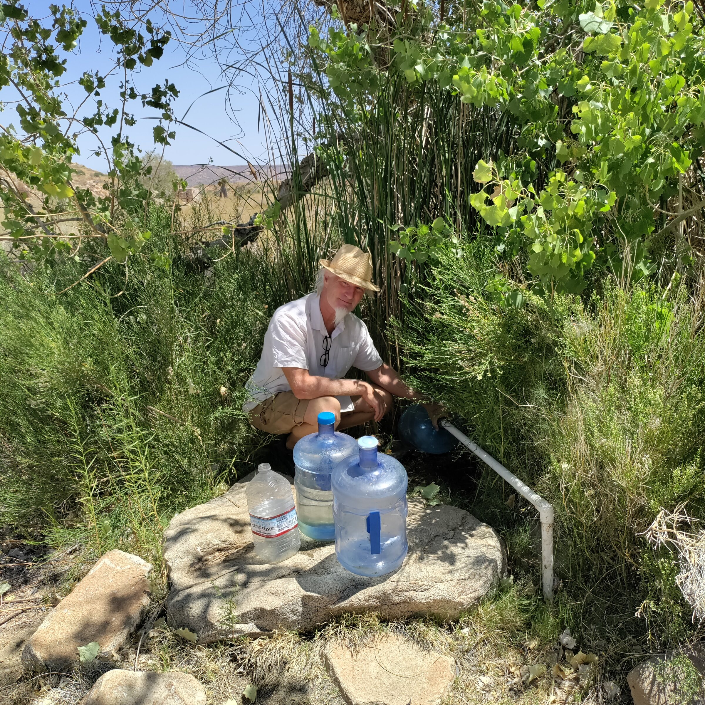
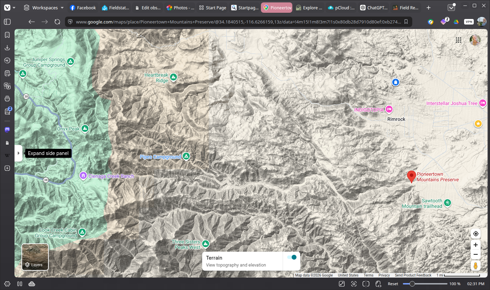

Field Report 006 · Water
Spring
Water
Harvest
Since our own spring at Boulder Gardens dried up, we have been making regular water runs once a week to Pioneertown Mountains Preserve, a Wildlands Conservancy preserve in the mountains above Pioneertown. We fill up about 6 to 12 gallons at a time

The preserve covers about 25,500 acres, rising from Pioneertown Valley to pine-covered ridges nearly 7,800 feet high. Unlike much of the surrounding desert, it contains year-round riparian corridors in Pipes Canyon and Little Morongo Canyon. Pipes Canyon itself is crossed by a year-round stream.
The preserve provides drinking water to visitors, and the water we collect there has a strong, steady flow. It tastes excellent—possibly even better than the water from our own spring did. We normally bring home between 6 and 12 gallons at a time, which is enough for roughly a week.
At first I assumed the water might somehow be coming down from the Big Bear area. The actual hydrology is a little more interesting. California groundwater records describe the Pipes Canyon basin as being recharged mainly by rain and runoff infiltrating the ground at the base of the surrounding San Bernardino Mountains. An older USGS study similarly describes the Pioneertown groundwater basin as being recharged by precipitation and mountain runoff, with much of that water moving underground through the sediments toward Pipes Canyon.
So the water is connected to the surrounding mountain watershed, but it would be more accurate to say that it comes from local groundwater recharged by the San Bernardino Mountains rather than directly from Big Bear.
I still don't know whether the drinking-water outlet at the preserve is gravity-fed or pumped from a well—the preserve's website lists drinking water as an amenity but does not identify the exact source or delivery system. That is something worth finding out on a future visit.
Photographic Record
The work, seen in place
Selected photographs from the private FieldStation source record.



System Thread
Related Fieldstation records
Public synopsis derived from Boulder Gardens Fieldstation Workbook source record FR006. Detailed equipment records, calculations, unresolved questions, and corrections remain in the workbook.